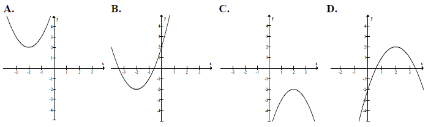

Jesteś tutaj: Matura
podstawowa - kurs - część 26 - zadania
Matura podstawowa - kurs - część 26 - zadania
Cały kurs na: ./matematyka-matura-podstawowa-kurs.html.
W tej lekcji wideo znajdziesz bardzo dokładne omówienie pojęcia funkcji
kwadratowej.
Czas nagrania: 45 min.
Funkcja kwadratowa, której zbiorem wartości jest przedział \( ( -\infty, -3\rangle
\) , może być określona wzorem
A.\(y=(x+2)^2-3 \)
B.\(y=-(x+3)^2 \)
C.\(y=-(x-2)^2-3 \)
D.\(y=-x^2+3 \)
C
Parabola o wierzchołku \(W = (−3, 5)\) i ramionach skierowanych w dół może być
wykresem funkcji określonej wzorem
A.\( y=2\cdot (x+3)^2+5 \)
B.\( y=-2\cdot (x-3)^2+5 \)
C.\( y=-2\cdot (x+3)^2+5 \)
D.\( y=-2\cdot (x-3)^2-5 \)
C
W układzie współrzędnych narysowano część paraboli o wierzchołku w punkcie \( A=(2,
4) \), która jest wykresem funkcji kwadratowej \( f \).  Funkcja \( f \) może być opisana wzorem
Funkcja \( f \) może być opisana wzorem
Funkcja \( f \) może być opisana wzorem A.\(f(x)=(x-2)^2+4 \)
B.\(f(x)=(x+2)^2+4 \)
C.\(f(x)=-(x-2)^2+4 \)
D.\(f(x)=-(x+2)^2+4 \)
C
Funkcja kwadratowa \(f(x)=-2(x-5)(x+1)\) jest malejąca w zbiorze
A.\((-1,5)\)
B.\( ( -\infty ,2 \rangle \)
C.\(\langle 2,+\infty )\)
D.\((-\infty ,-1)\cup (5,+\infty )\)
C
Wskaż funkcję kwadratową, której zbiorem wartości jest przedział \( (-\infty ;3
\rangle \).
A.\(f(x)=-(x-2)^2+3 \)
B.\(f(x)=(2-x)^2+3 \)
C.\(f(x)=-(x+2)^2-3 \)
D.\(f(x)=(2-x)^2-3 \)
A
Wykres funkcji kwadratowej \( f(x)=3(x+1)^2-4 \) nie ma
punktów wspólnych z prostą o równaniu
A.\(y=1 \)
B.\(y=-1 \)
C.\(y=-3 \)
D.\(y=-5 \)
D
Prosta o równaniu \( y=a \) ma dokładnie jeden punkt
wspólny z wykresem funkcji kwadratowej \( f(x)=-x^2+6x-10 \). Wynika
stąd, że
A.\(a=3 \)
B.\(a=0 \)
C.\(a=-1 \)
D.\(a=-3 \)
C
Jaka jest najmniejsza wartość funkcji kwadratowej \(
f(x)=x^2+4x-3 \) w przedziale \( \langle 0, 3 \rangle \)?
A.\(-7 \)
B.\(-4 \)
C.\(-3 \)
D.\(-2 \)
C
Oblicz najmniejszą wartość funkcji kwadratowej \(f(x)=x^2-6x+1\) w przedziale \(\langle 0,1 \rangle\).
\(-4\)
Dana jest parabola o równaniu \(y=x^2+8x-14\). Pierwsza
współrzędna wierzchołka tej paraboli jest równa
A.\( x=-8 \)
B.\( x=-4 \)
C.\( x=4 \)
D.\( x=8 \)
B
Wskaż fragment wykresu funkcji kwadratowej, której zbiorem wartości jest \(\langle
-2,+\infty )\). 
B
Wierzchołkiem paraboli będącej wykresem funkcji określonej wzorem \(f(x)=x^2-4x+4\) jest punkt o współrzędnych
A.\( (0,2) \)
B.\( (0,-2) \)
C.\( (-2,0) \)
D.\( (2,0) \)
D
Miejscami zerowymi funkcji kwadratowej \( y = -3(x-7)(x+2)
\) są
A.\(x=7, x=-2 \)
B.\(x=-7, x=-2 \)
C.\(x=7, x=2 \)
D.\(x=-7, x=2 \)
A
Oblicz największą wartość funkcji \(f(x)=-2x^2+16x-15\) w
przedziale \(\langle -2,3 \rangle\).
\(15\)
Wykresem funkcji kwadratowej \(f(x)=-3x^2+3\) jest
parabola o wierzchołku w punkcie
A.\( (3,0) \)
B.\( (0,3) \)
C.\( (-3,0) \)
D.\( (0,-3) \)
B
Miejscem zerowym funkcji kwadratowej \(y=-(-x-7)(1+x)\)
jest
A.\( x=7 \)
B.\( x=1 \)
C.\( x=0 \)
D.\( x=-1 \)
D
Wierzchołkiem paraboli o równaniu \(y=-3(x-2)^2+4\) jest
punkt o współrzędnych
A.\( (-2, -4) \)
B.\( (-2, 4) \)
C.\( (2, -4) \)
D.\( (2, 4) \)
D
Wierzchołek paraboli o równaniu \(y=(x+1)^2+2c\) leży
na prostej o równaniu \(y=6\). Wtedy
A.\( c=-6 \)
B.\( c=-3 \)
C.\( c=3 \)
D.\( c=6 \)
C
Na wykresie przedstawiony jest trójmian \(y = ax^2 + bx + c\).  Wynika z tego, że:
Wynika z tego, że:
Wynika z tego, że: A.\( b\lt 0 \)
B.\( b>0 \)
C.\( b\le 0 \)
D.\( b\ge 0 \)
B
Wierzchołek paraboli, która jest wykresem funkcji \( y=x^2 -2x-3 \) leży na
prostej:
A.\(y=-4 \)
B.\(y=4 \)
C.\(y=1 \)
D.\(y=2 \)
A
Rysunek obok przedstawia wykres funkcji kwadratowej \( f \). Zapisz wzór funkcji \(
f \) w postaci ogólnej i podaj jej zbiór wartości. 
\(f(x)=-x^2-2x+3\)
\(ZW=(-\infty ;4\rangle \)
Na rysunku przedstawiono fragment wykresu funkcji kwadratowej \( f \).  Funkcja \( f \) określona jest
wzorem
Funkcja \( f \) określona jest
wzorem
Funkcja \( f \) określona jest
wzorem A.\(f(x)=-\frac{1}{2}(x-3)(x+1) \)
B.\(f(x)=\frac{1}{2}(x-3)(x+1) \)
C.\(f(x)=-\frac{1}{2}(x+3)(x-1) \)
D.\(f(x)=\frac{1}{2}(x+3)(x-1) \)
A
Wykresem funkcji kwadratowej \( f(x)=2x^2+bx+c \) jest parabola, której
wierzchołkiem jest punkt \( W=(4,0) \). Oblicz wartości współczynników \( b \) i \( c \).
\(b=-16\), \(c=32\)
Wskaż rysunek, na którym przedstawiony jest wykres funkcji kwadratowej, określonej
wzorem \( f(x)=(x-2)(x+4) \) . 
D